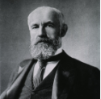

|
Views of Adolescence: Socialization and Development
Adolescence is…
- A short but crucial period in a person’s life.
- The period which sets the stage for a person’s transition from childhood to adulthood.
- A complex as well as confusing stage which provides experiences that have lifelong consequences.
Origins of Adolescence
- The World Health Organization (WHO) defines adolescence as the transitional period between childhood and adulthood that typically lasts until the ages of 18-21. It typically begins at the onset of puberty.
- In the early years and in many cultures, this stage is often not given much attention or even unheard of. Children suddenly become adults and consequently become burdened with the responsibilities of adulthood.

- American psychologist G. Stanley Hall (1846-1924) popularized the term adolescence.
- According to him, Western societies at the end of the 20th century began to institute laws against child labor where secondary schools were becoming the norm.
- This prolonged the period of children's dependence on their parents and other older members of the family.
- But also simultaneously, gave young people more time to develop and mature emotionally, psychologically and socially before they finally assume their responsibilities as adults.
- Another remarkable theory offered by G. Stanley Hall is the emotional development among teenagers. Hall popularized the term “storm and stress” which describes the competing forces among teenagers causing them to regularly exhibit contradictory tendencies.
- He compared teenagers’ emotional life to a pendulum given to extreme swings of behavior.
- In a moment’s notice, their emotions could change from enthusiasm to boredom; from joy to sadness; from vanity to shyness; from sensitivity to others to outright cruelty.
- Margaret Mead (1902-1978), an American anthropologist did a study on the cultural and biological factors that shaped adolescent girls in Samoa.
- Conducted in 1925, Mead used participant observation as her primary source of information by living, interacting and participating in the daily life of her subjects composed of 68 girls between the ages of 9 and 20.
- The research concluded that cultural, rather than biological factors, caused the emotional and psychological stress of adolescents.
|